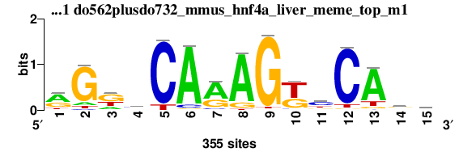
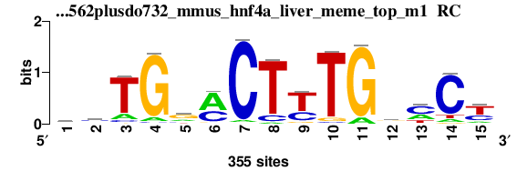
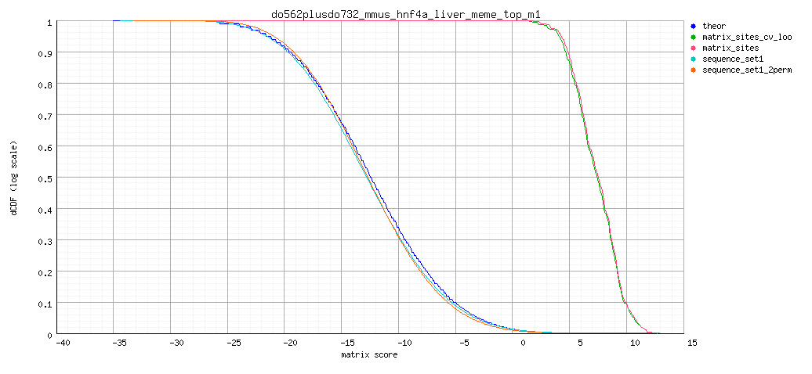
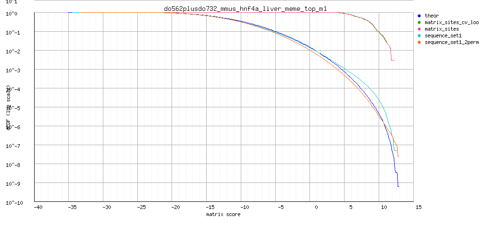
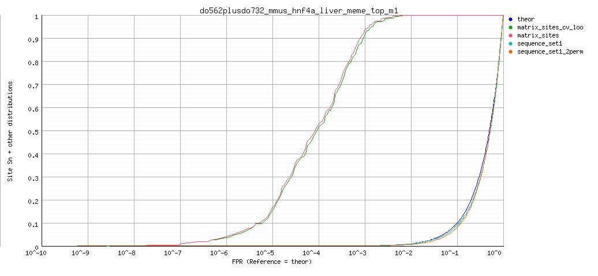

RSA-tools - matrix-quality result
Analysis: matrix-quality result: do562plusdo732_mmus_hnf4a_liver_meme_top_m1 (06/09/2014 00:20)
matrix-quality result: Motif enrichment in CEBPa dog liver do562plusdo732_mmus_hnf4a_liver_meme_top_m1
Command: matrix-quality -v 0 -html_title ' Motif enrichment in CEBPa dog liver ' -ms $RSAT/public_html/tmp/wwwrun/2014/09/05/matrix-quality_2014-09-05.235841_QFnNnl/input_matrix -matrix_format transfac -pseudo 1 -kfold 0 -seq sequence_set1 $RSAT/public_html/tmp/wwwrun/2014/09/05/matrix-quality_2014-09-05.235841_QFnNnl/sequence1.fasta -seq_format fasta -perm sequence_set1 2 -bgfile $RSAT/public_html/data/genomes/Canis_familiaris_EnsEMBL/oligo-frequencies/2nt_upstream-noorf_Canis_familiaris_EnsEMBL-ovlp-1str.freq.gz -bg_format oligo-analysis -bg_pseudo 0.01 -archive -o $RSAT/public_html/tmp/wwwrun/2014/09/05/matrix-quality_2014-09-05.235841_QFnNnl/matrix-quality_2014-09-05.235841
Figures
Matrix logo


Decreasing cumulative distributions (dCDF)

Decreasing cumulative distributions (dCDF), logarithmic Y axis

ROC curve (logarithmic X axis)

Matrix information
; convert-matrix -v 1 -from transfac -i $RSAT/public_html/tmp/wwwrun/2014/09/05/matrix-quality_2014-09-05.235841_QFnNnl/do562plusdo732_mmus_hnf4a_liver_meme_top_m1/matrix-quality_2014-09-05.235841_do562plusdo732_mmus_hnf4a_liver_meme_top_m1_matrix.tf -to tab -o $RSAT/public_html/tmp/wwwrun/2014/09/05/matrix-quality_2014-09-05.235841_QFnNnl/do562plusdo732_mmus_hnf4a_liver_meme_top_m1/matrix-quality_2014-09-05.235841_do562plusdo732_mmus_hnf4a_liver_meme_top_m1_matrix_info.txt -bgfile $RSAT/public_html/tmp/wwwrun/2014/09/05/matrix-quality_2014-09-05.235841_QFnNnl/matrix-quality_2014-09-05.2358412nt_upstream-noorf_Canis_familiaris_EnsEMBL-ovlp-1str.freq.gz_inclusive.tab -bg_format inclusive -return counts,frequencies,weights,info,parameters,sites,logo -logo_format png -logo_opt '-e -M -t do562plusdo732_mmus_hnf4a_liver_meme_top_m1 ' -logo_file $RSAT/public_html/tmp/wwwrun/2014/09/05/matrix-quality_2014-09-05.235841_QFnNnl/do562plusdo732_mmus_hnf4a_liver_meme_top_m1/matrix-quality_2014-09-05.235841_do562plusdo732_mmus_hnf4a_liver_meme_top_m1_logo
; Input files
; input /home/rsat/rsat/public_html/tmp/wwwrun/2014/09/05/matrix-quality_2014-09-05.235841_QFnNnl/do562plusdo732_mmus_hnf4a_liver_meme_top_m1/matrix-quality_2014-09-05.235841_do562plusdo732_mmus_hnf4a_liver_meme_top_m1_matrix.tf
; prior /home/rsat/rsat/public_html/tmp/wwwrun/2014/09/05/matrix-quality_2014-09-05.235841_QFnNnl/matrix-quality_2014-09-05.2358412nt_upstream-noorf_Canis_familiaris_EnsEMBL-ovlp-1str.freq.gz_inclusive.tab
; Input format transfac
; Output files
; output /home/rsat/rsat/public_html/tmp/wwwrun/2014/09/05/matrix-quality_2014-09-05.235841_QFnNnl/do562plusdo732_mmus_hnf4a_liver_meme_top_m1/matrix-quality_2014-09-05.235841_do562plusdo732_mmus_hnf4a_liver_meme_top_m1_matrix_info.txt
; Output format tab
; pseudo-weight 1
; Background model
; Strand undef
; Background pseudo-frequency 0.01
; Residue probabilities
; a 0.26457
; c 0.23303
; g 0.23983
; t 0.26257
a 180 31 70 44 0 320 218 301 2 14 47 5 274 76 120
c 18 13 9 123 321 22 23 1 4 15 168 317 10 75 62
g 110 284 169 105 1 9 102 39 336 122 51 9 22 144 104
t 47 27 107 83 33 4 12 14 13 204 89 24 49 60 69
//
a 0.5 0.1 0.2 0.1 0.0 0.9 0.6 0.8 0.0 0.0 0.1 0.0 0.8 0.2 0.3
c 0.1 0.0 0.0 0.3 0.9 0.1 0.1 0.0 0.0 0.0 0.5 0.9 0.0 0.2 0.2
g 0.3 0.8 0.5 0.3 0.0 0.0 0.3 0.1 0.9 0.3 0.1 0.0 0.1 0.4 0.3
t 0.1 0.1 0.3 0.2 0.1 0.0 0.0 0.0 0.0 0.6 0.3 0.1 0.1 0.2 0.2
//
a 0.6 -1.1 -0.3 -0.8 -5.9 1.2 0.8 1.2 -3.7 -1.9 -0.7 -2.9 1.1 -0.2 0.2
c -1.5 -1.8 -2.2 0.4 1.4 -1.3 -1.3 -4.2 -3.0 -1.7 0.7 1.3 -2.1 -0.1 -0.3
g 0.3 1.2 0.7 0.2 -4.2 -2.2 0.2 -0.8 1.4 0.4 -0.5 -2.2 -1.3 0.5 0.2
t -0.7 -1.2 0.1 -0.1 -1.0 -3.1 -2.0 -1.9 -2.0 0.8 -0.0 -1.3 -0.6 -0.4 -0.3
//
a 0.3 -0.1 -0.1 -0.1 -0.0 1.1 0.5 1.0 -0.0 -0.1 -0.1 -0.0 0.8 -0.0 0.1
c -0.1 -0.1 -0.1 0.1 1.2 -0.1 -0.1 -0.0 -0.0 -0.1 0.3 1.2 -0.1 -0.0 -0.1
g 0.1 1.0 0.3 0.1 -0.0 -0.1 0.1 -0.1 1.3 0.1 -0.1 -0.1 -0.1 0.2 0.1
t -0.1 -0.1 0.0 -0.0 -0.1 -0.0 -0.1 -0.1 -0.1 0.4 -0.0 -0.1 -0.1 -0.1 -0.1
//
; Sites 355
>site_0
AGGTCAAAGTCCAGA
>site_1
AGGGCAAAGTCCAGG
>site_2
AGGCCAGAGTCCAGA
>site_3
AGGGCAGAGTCCAGA
>site_4
AGTGCAAAGTCCAGC
>site_5
AGTCCAGAGTCCAGA
>site_6
AGGCCAAAGGCCAAA
>site_7
GGGGCAGAGTCCAGA
>site_8
GGGGCAGAGTCCAGA
>site_9
AGTCCAAAGTTCAGT
>site_10
TGGTCAAAGTCCAGA
>site_11
GGGTCAGAGTCCAGA
>site_12
AGGTCAGAGTTCAGA
>site_13
AGGGCAGAGTCCAAG
>site_14
AGGTCAGAGTCCACA
>site_15
GGTTCAAAGTCCAAA
>site_16
AGGCCAAAGGTCAAA
>site_17
GGGGCAGAGTCCAGG
>site_18
AGGCCAAAGTTCACT
>site_19
GGGGCAAAGGTCAGA
>site_20
AGGTCAAAGGGCAGA
>site_21
AGGACAGAGTCCAGG
>site_22
AGGGCAAAGGGCAGG
>site_23
GGTGCAAAGTCCATG
>site_24
AGGCCAGAGGCCAGC
>site_25
AGGTCAAAGGACAGG
>site_26
GGGGCAGAGTTCAGG
>site_27
AGTCCAAGGTCCAGA
>site_28
AGGTCAGAGTCCACT
>site_29
AGGCCAAAGGACAGC
>site_30
TGGCCAAAGGCCAAA
>site_31
GGTACAAAGTTCAGA
>site_32
AGGGCAAAGGACAGC
>site_33
AGTTCAAAGTACAAG
>site_34
GGTTCAGAGTTCAGA
>site_35
TGTACAAAGTCCAGA
>site_36
AGGCCAAGGTCCAAA
>site_37
GGGCCAAAGTGCAAG
>site_38
AGGGCAAAGGGCAGC
>site_39
AGGGCAAAGGACAAG
>site_40
AGGGCAGAGGGCAGA
>site_41
AGTCCAAAGGACAGC
>site_42
AGGCCAGAGGGCAGG
>site_43
AGTCCAAAGGACAGC
>site_44
AGAGCAAAGGTCAGC
>site_45
AGGTCAAGGGCCAGA
>site_46
TGGCCAAAGTTCATG
>site_47
TGATCAAAGGCCAGA
>site_48
AGGGCAGAGGTCAAG
>site_49
GGTGCAGAGGTCAGA
>site_50
AGTCTAAAGTCCAAA
>site_51
AGGTCAGAGTCCTGG
>site_52
GGGGCAAAGGGCAAA
>site_53
AGAACAAAGGCCACA
>site_54
AGGGCAAAGTTCTCA
>site_55
AGGCCAAATTCCAGA
>site_56
AGGCCAAAGCTCAGA
>site_57
AGTACAGAGTCCATG
>site_58
TGGTCAGAGGCCAGG
>site_59
GGGGCAAAGGGCAGC
>site_60
AGGCTAAAGTCCATG
>site_61
GGGACAAAGGTCAGT
>site_62
GGGGCACAGTCCAGG
>site_63
AGTCCCAAGTCCAGG
>site_64
AGGGCAGAGGGCAGT
>site_65
GGAGCAAAGGACAGA
>site_66
TGTTCAAAGGTCAGG
>site_67
GTGCCAAAGTCCAGT
>site_68
GGTGTAAAGTCCAGG
>site_69
GGACCAAAGTGCAAG
>site_70
TGGGCAAAGGTCATA
>site_71
ATTCCAAAGTCCAAG
>site_72
ATTGCAAAGTCCACA
>site_73
AGGGCAGAGGGCAAG
>site_74
AGGTCAGAGGACAGC
>site_75
AAGGCAAAGTCCACT
>site_76
AGGTCAAGGTCCACT
>site_77
AGAGCAAAGTCCTAG
>site_78
GGTCCAAAGACCAGA
>site_79
AGGTCAAGGTCCACC
>site_80
AGACTAAAGTCCACA
>site_81
GAGTCAAAGTCCAAG
>site_82
AGAACAAAGGTCAAG
>site_83
GGAACAGAGTCCAAA
>site_84
AGAGCAAGGTCCAAG
>site_85
AGGCCAAATTCCACA
>site_86
AGGGCAAGGTGCAGT
>site_87
CGGGCAAAGTCCATT
>site_88
GGAACAGAGTCCAGC
>site_89
GTGTCAGAGTCCAGA
>site_90
AGTGCCAAGTCCAGC
>site_91
AGTCCAAAGTACTGT
>site_92
AGTCCAAAGTTCTCT
>site_93
GGACCAGAGGACAGA
>site_94
TGACCAAAGGTCACA
>site_95
GGGGCCAAGTCCAGT
>site_96
AGACCAAAGGCCTAG
>site_97
AGGCTAAAGGTCAGC
>site_98
GGGTTAAAGTCCATG
>site_99
GGTGCAAAGGTCTGA
>site_100
AGGACAAAGTCTACA
>site_101
AGGTCAGAGGACACT
>site_102
AGTCCAAAGTTCGGT
>site_103
AGGCCAGAGTCTAAG
>site_104
AGGACAAAGTCTACA
>site_105
TAGCCAAAGTCCAGC
>site_106
GGGGCAGAGTCCTAG
>site_107
GGGTCAGAGTACACT
>site_108
AGAGCAAAGTCCTTT
>site_109
AGACCAGAGGGCATA
>site_110
GGGTCAAAGCTCAGG
>site_111
AGGACACAGTCCACG
>site_112
AGGGCACAGGGCAGA
>site_113
GGTACAAAGGGCAAA
>site_114
GAGCCAGAGTCCACA
>site_115
AGGGCAAAGTCGACA
>site_116
AGTTCACAGTCCATT
>site_117
TGTTCAAAGTGCAAC
>site_118
AGAGCAAGGTTCATA
>site_119
GGTCCAGAGGCCTGG
>site_120
AGAGCAGAGGACAAG
>site_121
AGGACAGAGGGCAAG
>site_122
GAGTCAAAGTACAGG
>site_123
GGAGCAAGGTCCAAG
>site_124
AGAGCAGGGTCCAGT
>site_125
GGTGCAAGGTACAGG
>site_126
AATCCAAAGGGCAGG
>site_127
GGTCTAAAGTTCATA
>site_128
GGGCCAAAGAGCAGA
>site_129
GGTTCAAAGTCTAAG
>site_130
AGGGCACAGGCCACC
>site_131
ACTCCAAAGTTCAAA
>site_132
AGGGCAAAGTCCCTG
>site_133
GGTCCACAGTCCACT
>site_134
TGGGCAGAGTCCTAA
>site_135
AGGGCAAAGCTCACT
>site_136
GGGTCAGAGTACTGA
>site_137
TGTTCAGAGGTCACA
>site_138
GGACCAGAGGGCAGT
>site_139
AGTGCAAAGATCAAG
>site_140
AAGCCAAAGGTCAAC
>site_141
GGGACACAGTCCACA
>site_142
AGTTCAGAGGCCTTA
>site_143
GGTCCAAAGCTCAGT
>site_144
AGGTCAGAGTCCCGG
>site_145
AGTCCAAAGTGTAGC
>site_146
GGGTCAGAGGGCAAC
>site_147
CAGTCAAAGTCCAGA
>site_148
AGGACAAGGGTCACA
>site_149
AGGCCAGAGGCTACG
>site_150
AGAGCAAGGTACACA
>site_151
GTTCCAAAGTTCATG
>site_152
TGACCAAAGTCCTCG
>site_153
GGGTTAGAGTCCATG
>site_154
AGGCCAGGGTTCACC
>site_155
AGTCCAATGGTCAGG
>site_156
GGGTTAGAGTCCATG
>site_157
ACACCAAAGTCCACG
>site_158
GAACCAGAGTCCAAA
>site_159
GGTCCATAGTACAGA
>site_160
GGGACAAAGGGCTGA
>site_161
AATCCAAAGGGCATA
>site_162
GGTTCCAAGTTCAGT
>site_163
AGTTTAGAGTTCATG
>site_164
AGGGCAAATTGCACA
>site_165
AAATCAGAGGCCAAA
>site_166
GTACCAGAGTCCAGC
>site_167
GGTACCAAGTTCAGA
>site_168
AGTCCAAAGTCTTGT
>site_169
GGCACAAAGTCCACA
>site_170
GGTCCAAGGGGCAAA
>site_171
ACTCCAAAGTTCAAC
>site_172
GGAGCAAAGTACTTA
>site_173
AGAGCAAAGGTCTCC
>site_174
AGGCTAGAGGTCAAT
>site_175
AGGTCTAAGTCCACA
>site_176
TGTGCACAGTACAGA
>site_177
AGTATAGAGTACAGA
>site_178
AGGTCAAAGTTAAGT
>site_179
AGTCCAAAGGATAAG
>site_180
GCTGCAAAGTCCATT
>site_181
TGTCCAAGGTACACA
>site_182
AGTCTACAGTTCAGG
>site_183
TGATCCAAGTCCAAA
>site_184
AGCTCAGAGGCCATG
>site_185
AGGGTAGAGGGCATA
>site_186
TGAGCAAGGTCCACC
>site_187
AGATCAAAGAACACA
>site_188
AGAGCAGAGAGCAGA
>site_189
AGGGCAAAGGGGAGG
>site_190
ATTCCAAAGTCTAGC
>site_191
AGGGCAGAGTCTTGT
>site_192
CGTCCAGGGTCCAGG
>site_193
AGAGCAAAGTACCGG
>site_194
GGTCCAAAGTCGACC
>site_195
GGTACAAGGTGCAAG
>site_196
GGAACAGAGTACATC
>site_197
GCACCAAAGGTCAGG
>site_198
GAGCCAAAGTCCTCC
>site_199
TGTGCATAGTTCAAA
>site_200
GGTGCACAGGACACA
>site_201
CGGGCAAATTCCAGG
>site_202
AGTCCGAAGGTCAAG
>site_203
CGACCAAAGTCCTTG
>site_204
ATGTCACAGGCCAGT
>site_205
GGTGCAAATGTCAGT
>site_206
TGGGTAAAGTCCTAG
>site_207
TGTCCAATGTCCATT
>site_208
TGTTCAAGGTACATG
>site_209
CAGTCAAAGTCCATT
>site_210
ATTCCAGGGTCCACA
>site_211
TGTCCAAAGCACAGC
>site_212
TGAGCAAAGTCCGCT
>site_213
AGGCTCAAGTTCAGC
>site_214
GGACCAGAGCTCACA
>site_215
AGGACATAGGGCAAA
>site_216
TGGCCAAATGTCAGT
>site_217
AACCCAAAGGTCAGA
>site_218
AGGACAAAGAGCATT
>site_219
GGATCAGTGTCCAGC
>site_220
GGACCCGAGTCCACT
>site_221
TGAGCAAGGTTCATC
>site_222
GGTTTAAAGTTCTGC
>site_223
AAGTCCAAGGCCAGC
>site_224
GGAACAAAGATCACA
>site_225
GGGCTGAAGTCCAGA
>site_226
AAGGCAAAGGGCTGT
>site_227
TGTCCCAAGGTCATA
>site_228
GTGCCAAGGTCCATC
>site_229
AGAATAGAGTTCATG
>site_230
TAGTCAAAGTCCTCG
>site_231
AGCACAAAGGGCACA
>site_232
GTCCCAAAGTCCACA
>site_233
AGGACAAAGTCTTAC
>site_234
AGGCCAGTGTACACC
>site_235
TGAGCAAAGGGTAGA
>site_236
TGATCAAAGGCTATG
>site_237
TGAGCAGGGTGCAGG
>site_238
AGAGCAAAATCCAAA
>site_239
AGGTCCCAGGTCAGG
>site_240
ACTCTAAAGGCCAGT
>site_241
GGAGCACAGTCCTTG
>site_242
GGTACACAGGACACA
>site_243
GAGACAAAGTCCTCT
>site_244
AGTCCAGAGCACTGA
>site_245
GTGCCAAGGTGCACA
>site_246
AGTCCAATGTCCTTC
>site_247
AGTGCAAAGAGCTGC
>site_248
ATGACACAGTTCAGC
>site_249
TAGTCAAGGTCCAAT
>site_250
CGGGCAAAGGTCTTT
>site_251
GGGTCGAAGGGCAAA
>site_252
ATGCCCAAGTTCAAC
>site_253
AGTCCAAAGGGCCCT
>site_254
CAGTCAGAGTCCACT
>site_255
AGTTCAAATCCCAGT
>site_256
GGGGTCAAGGTCAGG
>site_257
GGGACACGGTCCATG
>site_258
GCACCAAGGTCCAGT
>site_259
AGGTTACAGGCCTGA
>site_260
AGGTCATAGTCTATT
>site_261
GGACCAAAGTCTGGT
>site_262
AGTGTGGAGTCCAGA
>site_263
ACTCCAGAGTCCGGG
>site_264
AGGTTGAAGTCCATG
>site_265
AGGTTAAAGTCGAAT
>site_266
AGGGCAGAGGCGTGG
>site_267
AGTTCAGAGGTTTGG
>site_268
GTGCCCGAGTCCAGC
>site_269
TGGGCAAAGCTCGGA
>site_270
ATTACAAAGGTCTGC
>site_271
AGGGCATTGTCCATG
>site_272
TGGCCAGAGGACTTC
>site_273
GATCCACAGTGCAGT
>site_274
GCTCCAAAGGGCACC
>site_275
AAGCCAGGGGGCAGT
>site_276
TGGTCAGTGGTCACA
>site_277
GTGTCAATGGCCAGT
>site_278
AGGACAAAGGCTGGC
>site_279
GGAACAAAGTTCCCG
>site_280
GGGTCAAAGAGCTTA
>site_281
GTTCCAAAGTCCGTC
>site_282
GCAACAGAGTACAGA
>site_283
GGGCCAGTGTTCTGT
>site_284
TGTGCAATGTCCTTA
>site_285
TGGCCAAAGGGGAAG
>site_286
AGACCAATGGACTGA
>site_287
AGTCCAAAAGTCAAG
>site_288
AATGCCGAGGCCAAG
>site_289
CAGTCAGAGGCCATT
>site_290
GGGCCTAAGCCCAGA
>site_291
AGGGCAGAGACCGCT
>site_292
AAGACAGAGTCTAAT
>site_293
CAGACAAAGTACATG
>site_294
AGAGCCAAGTCCGTT
>site_295
GGCTCCAAGTCCAAT
>site_296
GGGTCAGAGTGCCTT
>site_297
TGGTCAGAGTTCCCT
>site_298
ACTTCATAGTTCAAA
>site_299
AGTCCAATGTTCGAT
>site_300
GGATCAGAGACCGGA
>site_301
AGGCCAAGGTCTTTC
>site_302
ACTCCAAGGTACAAT
>site_303
AGGTCTAGGGCCAGT
>site_304
GTTCCAAAGCTCATT
>site_305
AGCTCAAAGATCAAC
>site_306
GGGGTAAAGTACGAC
>site_307
ATTCCCAAGGCCTGG
>site_308
GGGTCAAAGGTGTGT
>site_309
GGGGCATAGGTCTCT
>site_310
ATGCCACAGCCCAGC
>site_311
AGCACACAGGACAGA
>site_312
ACAGCAAGGTACATA
>site_313
ATTCCAGATTCCACC
>site_314
TGGGCATAGTCCGTG
>site_315
GGGCCGAAGGCCTCC
>site_316
GGGTCAATGTATAAA
>site_317
GATCCCAAGGGCAAA
>site_318
TGTGCAGAGTTAATG
>site_319
TAACCAAAGTCCGCC
>site_320
GGGGCAAAGTCAGCG
>site_321
CGATCAAAGGTCGAT
>site_322
AGTGTAAATTGCATC
>site_323
AGATCAAGGTTGAAC
>site_324
TAAGTAGAGGTCAGA
>site_325
CGGGCAGAGAGCACC
>site_326
AGGGCGAAGTCCCTC
>site_327
AGGGCATATGCCTGG
>site_328
ATTGCATGGTTCAAA
>site_329
AGAGTAAACGCCACA
>site_330
AGACCCGATTTCAAG
>site_331
AGAGCAGAGAGTATA
>site_332
AGGTCAGGCGCCAAG
>site_333
TGTACAAAGGAAAAA
>site_334
AATGCAAAGGTAAAT
>site_335
TTTTCAAATTACAAA
>site_336
TGTGTACGGTCCATA
>site_337
TGGGGAAAGTACAAG
>site_338
GGTTCTAAGTTCTAC
>site_339
TGATTAAAGGTTATG
>site_340
AGTACGGAGGCCGGG
>site_341
GTAGTAAAGTCCGAG
>site_342
GGTACATAGTCCCTG
>site_343
CGGCCATAGCCCACC
>site_344
AGCCCAGAGTAGACG
>site_345
GTGCCCGAGTCTAGC
>site_346
AAAATAAAGTTTAGT
>site_347
CTACCAAAGGTCGCA
>site_348
CGGCCAGGGGTCCGG
>site_349
CGAGCAGACGCCACG
>site_350
GGTCCACCGGTCACG
>site_351
AGGGCAGTGCGCGCG
>site_352
CGTCCAAATCCCGAA
>site_353
AGGTCGCGGTACTCG
>site_354
CGAACCGACGCCGCG
;
; Matrix parameters
; Columns 15
; Rows 4
; Alphabet a|c|g|t
; Prior a:0.264573486852274|c:0.233031168150323|g:0.239829744535815|t:0.262565600461588
; program transfac
; matrix.nb 1
; accession do562+do732_mmus_hnf4a_liver_meme_top_m1
; AC do562+do732_mmus_hnf4a_liver_meme_top_m1
; id do562+do732_mmus_hnf4a_liver_meme_top_m1
; name do562plusdo732_mmus_hnf4a_liver_meme_top_m1
; description rGksCArAGkyCAgr
; statistical_basis 355 sequences
; sites 355
; min.prior 0.233031
; alphabet.size 4
; max.bits 2
; total.information 7.96487
; information.per.column 0.530991
; max.possible.info.per.col 1.45658
; consensus.strict aGgcCAaAGtcCAga
; consensus.strict.rc TCTGGACTTTGGCCT
; consensus.IUPAC rGksCArAGkcCAgr
; consensus.IUPAC.rc YCTGGMCTYTGSMCY
; consensus.regexp [ag]G[gt][cg]CA[ag]AG[gt]cCAg[ag]
; consensus.regexp.rc [CT]CTGG[AC]CT[CT]TG[CG][AC]C[CT]
; residues.content.crude.freq a:0.3196|c:0.2218|g:0.3018|t:0.1568
; G+C.content.crude.freq 0.523568
; residues.content.corrected.freq a:0.3195|c:0.2218|g:0.3016|t:0.1571
; G+C.content.corrected.freq 0.523426
; min(P(S|M)) 2.77433e-24
; max(P(S|M)) 0.000674304
; proba_range 0.000674304
; Wmin -33.6
; Wmax 13.6
; Wrange 47.2
; logo file:/home/rsat/rsat/public_html/tmp/wwwrun/2014/09/05/matrix-quality_2014-09-05.235841_QFnNnl/do562plusdo732_mmus_hnf4a_liver_meme_top_m1//matrix-quality_2014-09-05.235841_do562plusdo732_mmus_hnf4a_liver_meme_top_m1_logo_m1.png
; logo file:/home/rsat/rsat/public_html/tmp/wwwrun/2014/09/05/matrix-quality_2014-09-05.235841_QFnNnl/do562plusdo732_mmus_hnf4a_liver_meme_top_m1//matrix-quality_2014-09-05.235841_do562plusdo732_mmus_hnf4a_liver_meme_top_m1_logo_m1_rc.png
; Host name rsat
; Job started 2014-09-06.000938
; Job done 2014-09-06.000938
; Seconds 0.3
; user 0.3
; system 0.03
; cuser 0.33
; csystem 0.01
Result files
{kind=link}
{kind=link}